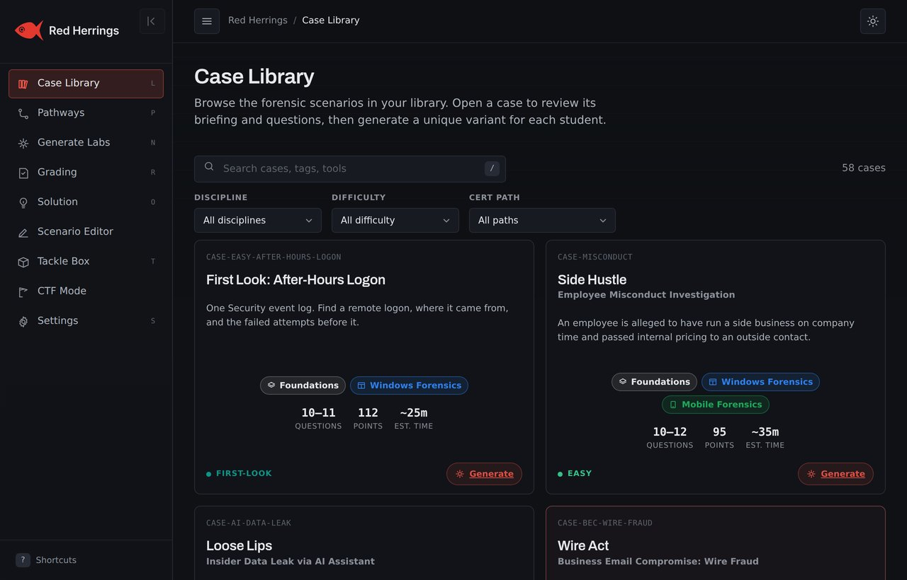
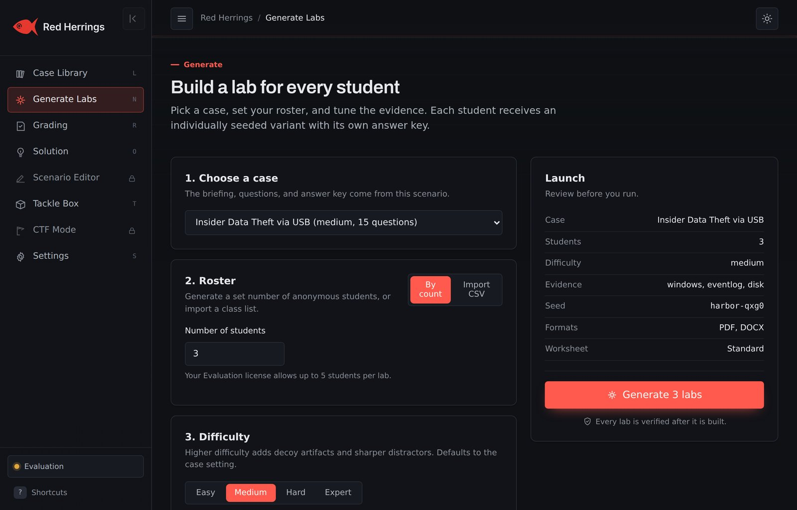
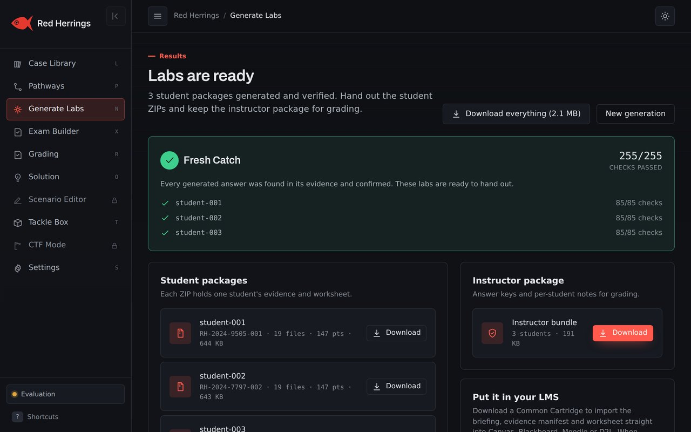
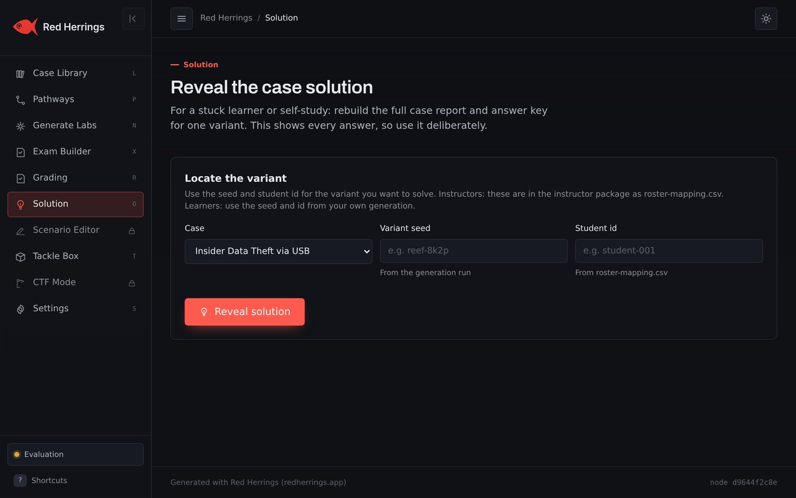

One case, a verified lab for every student
You write or pick a case once. Red Herrings generates, verifies, hands out, grades and exports to your LMS — all on your own machine.


One case, a lab for every student
Write or pick a case once. Red Herrings seeds it differently for each student, so everyone gets their own hostnames, users, timestamps, files, hashes and answers from the same scenario, and you only prepared one case.
Pick a case
Choose from the built-in library, write your own in the editor, or install a pack.
Set the class
A head count or roster CSV, a difficulty, and a seed. That is the whole setup.
Generate
Per-student evidence, worksheet, answer key and rubric, plus an optional investigation report and chain-of-custody template, each verified as it is built.
Hand out and grade
One zip per student, batch grading, and a grade file for your LMS.
71 cases across two disciplines, ready to run
Cases span two disciplines. Digital Forensics covers disk, registry, Windows event logs, memory, network captures (PCAP), mobile, cloud, Linux and macOS evidence, grouped into certification-prep tracks for GCFE, GCFA, GNFA, GCFR and the SANS macOS/Linux tracks. Incident Response cases work from the responder's own EDR and SIEM feeds and are mapped to MITRE ATT&CK tactics, with tracks for GCIH and CompTIA CySA+. Filter by discipline, difficulty or track, open a case to read the briefing and questions, or build your own in the visual editor.

Your roster, your evidence, one click
Enter a head count or drop in a roster CSV, pick a difficulty (higher difficulty adds decoys and sharper distractors), choose your output formats, and set a seed. The same seed and roster reproduce the exact same labs, so you can rebuild a lost package or regenerate on another machine. Then generate a uniquely seeded lab for every student at once.

Every answer key is checked against the evidence
After each lab is built, Red Herrings re-opens every artifact with an independent parser and confirms the answer key is actually in the evidence. That is the green Fresh Catch check. A fact that cannot be found is flagged before you ever hand the lab out.
Each student gets only their own zip; the instructor package holds the keys and per-student notes. Because every variant is seeded independently, the built-in anti-collusion report flags shared work.

Hints when they are stuck, not the whole answer
For a stuck learner or self-study, guided mode steps through a question one hint at a time: from a nudge about where to look, to how to work it with the right tool, to the answer. Print a guided worksheet with a hint under each question and a tool quick-start appendix, and decide whether learners may reveal full solutions at all.

Authentic evidence, in the formats of the job
This is the part that matters: the evidence is not screenshots or tidy CSVs standing in for forensics. Each artifact is written in its real on-disk format — the same bytes the tool expects — so a case opens in Autopsy, Registry Explorer, Wireshark, Volatility or DB Browser exactly as a real one would, and every answer on the key is proven to be present in it. Here is what a case can hand a student, and what they open it with.
Disk images
A real FAT/exFAT volume with a live file system, directory structure and deleted entries — carve and examine it, don't just read a listing.
Windows registry
NTUSER.DAT, SYSTEM and SOFTWARE hives in the binary REGF format, carrying the keys that USB history, execution and persistence analysis actually live in.
Windows event logs
Security.evtx and System.evtx as genuine binary EVTX — logon (4624/4625), process-creation (4688) and service events with the fields and IDs you expect, correlated by logon session.
Execution & shortcut artifacts
Prefetch written MAM/Xpress-Huffman-compressed like Windows 10/11, LNK shortcuts, and jump lists in the real CFB layout.
Memory
A real Windows minidump plus Volatility-style process, DLL, module and connection listings — spot the injected code, the unlinked module and the hidden network connection.
Network captures
A genuine packet capture with real TCP handshakes, a passive-FTP data channel, and an HTTP POST whose wire bytes and SHA-256 match the file carved from disk.
Browser history
The browser's own SQLite history database — visits, downloads and timestamps to decode and line up on a timeline.
A full mbox mailbox with real headers — the Received chain, SPF and DKIM results — to trace a phishing message back to where it really came from.
Mobile — Android & iPhone
Android SMS, contacts, call-log, location-cache and WhatsApp stores, and iPhone sms.db and AddressBook — real SQLite from an extraction, Apple Cocoa-time stamps and all.
Cloud audit logs
AWS CloudTrail, Microsoft 365 unified audit and Entra sign-in logs in their real JSON/CSV shapes, with the access-key and session fields that thread an attack together.
Linux & macOS hosts
Linux auth.log, syslog and shell history with PID-correlated PAM and systemd lines; macOS unified-log output, property lists and the LSQuarantine download record.
EDR & SIEM — incident response
Per-vendor EDR detections (CrowdStrike Falcon, Microsoft Defender, SentinelOne) and SIEM exports (Splunk ES, Microsoft Sentinel) in each product's real export shape, mapped to MITRE ATT&CK.
A case mixes the families its investigation needs, and a student README lists every file with its SHA-256. You pick exactly which artifact types a lab includes when you generate it.
Built for the classroom
Real evidence, trustworthy keys, and grading that lands in your gradebook, without sending a byte of student data anywhere.
Runs on your machine
Local software for Windows and Linux. Generation and grading make no network call, and it runs air-gapped. The only server contact is license activation, which air-gapped machines can do by file. No student data ever leaves your computer.
Grades the whole class
Batch-grade from the grading sheet with sensible tolerances and a reason shown for every score. Export grades to Canvas, Blackboard, Moodle or D2L, or a Common Cartridge module to import the assignment straight into your LMS.
A different case for everyone
Independently seeded variants mean answers differ from student to student. The anti-collusion report shows, per question, how distinct the answers were and which pairs look most alike.
Students can solve in the browser
Hand each student a private link to answer their lab online: a practice mode with instant feedback and hints, or a timed exam that captures and locks their answers. The answer key never reaches the student, and a class analytics dashboard shows where everyone got stuck. Nothing leaves your machine.
Or launch it from your LMS
Deployed as a hosted tool, Red Herrings plugs into your LMS over LTI 1.3: pick a case from inside the assignment editor, students launch their own variant, and scores post straight back to the gradebook.
Grades export straight to your LMS, or a Common Cartridge module for any other
Trademarks are the property of their respective owners and are shown to indicate compatibility, not endorsement.
No class, and no LMS required
Everything above is there when you want it, but none of it is mandatory. On a Personal license, Red Herrings runs in single-user mode: it builds one lab seeded just for you — the same authentic evidence and the same verified answer key — with no roster, no server and no LMS in the loop.
Work the case in the real tools, then self-check with the built-in grader and reveal the guided, step-by-step solution when you get stuck. It is the straightforward way to practise for GCFE, GCFA, GNFA, GCFR, GCIH, CySA+ and the vendor exams on your own schedule. Change your seed and generate again for a fresh variant any time.
See it on your own class
Start the free 14-day trial. No key needed, nothing to host, and it runs entirely on your machine.